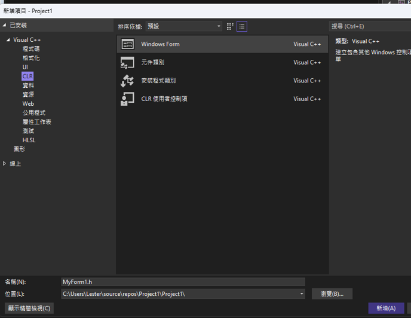
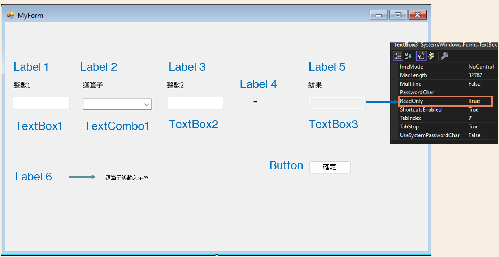

IC測試機器之軟體支援平台


如何去安裝？
打開 Visual Studio Installer
點選這些選項 , 然後點擊安裝
如過還要安裝其他類的，打開 Visual Studio Installer 點選 Modify 即可
步驟 一 Part 1
先建立新的專案
尋找CLR 點擊 CLR空白專案
屬性
右鍵點擊Project然後看到最低點選屬性
點選連接器點擊系統尋找子系統點選 Windows (/SUBSYSTEM:WINDOWS)
下一個點擊進階尋找進入點寫Main 然後點擊 OK
Part 2 一 步驟二
右鍵點選 Project 1
點加入新增項目
在Visual C++ 找 CLR 選Window Form
然後按新增

顯示錯誤
#include "MyForm.h"
using namespace System;
using namespace System::Windows::Forms;
Void Main(array^ args) {
Application::EnableVisualStyles();
Application::SetCompatibleTextRenderingDefault(false);
Project1::MyForm form;
Application::Run(% form);
};

顯示錯誤
#include "MyForm.h"
using namespace System;
using namespace System::Windows::Forms;
Void Main(array^ args) {
Application::EnableVisualStyles();
Application::SetCompatibleTextRenderingDefault(false);
Project1::MyForm form;
Application::Run(% form);
};

Code 程式代碼
private: System::Void button1_Click(System::Object^ sender, System::EventArgs^ e) {
int num3;
float num1, num2;
bool result1, result2;
num1 = Convert::ToSingle(textBox1->Text);
num2 = Convert::ToSingle(textBox2->Text);
textBox3->Text = "";
labelMsg->Text = "";
if (textComb1->Text == "+")
{
num3 = 1;
}
if (textComb1->Text == "-")
{
num3 = 2;
}
if (textComb1->Text == "*")
{
num3 = 3;
}
if (textComb1->Text == "/")
{
num3 = 4;
}
switch (num3)
{
case 1:
textBox3->Text = Convert::ToString(num1 + num2);
break;
case 2:
textBox3->Text = Convert::ToString(num1 - num2);
break;
case 3:
textBox3->Text = Convert::ToString(num1 * num2);
break;
case 4:
textBox3->Text = Convert::ToString(num1 / num2);
default:
labelMsg->Text = "運算子線輸入:+-*/";
break;
}
}
ComboBox
1.Visual C++
2.Windows Desktop
3.Window傳統式精靈精靈
將這段code貼入dllmain.cpp code(註解)
// dllmain.cpp : Defines the entry point for the DLL application.
#include "framework.h"
#define DLLMAIN_API __declspec(dllexport)
DWORD ul_reason_for_call,
extern "C" DLLMAIN_API void helloWorldFun()
{
MessageBoxW(0, L"此函式呼叫成功", L"helloWorldFun", 0);
}
BOOL APIENTRY DllMain(HMODULE hModule,
LPVOID lpReserved
)
{
switch (ul_reason_for_call)
{
case DLL_PROCESS_ATTACH:
MessageBox(0, L"程序建立時被呼叫", L"DllMain", 0);
break;
case DLL_THREAD_ATTACH:
MessageBox(0, L"執行緒建立時被呼叫", L"DllMain", 0);
break;
case DLL_THREAD_DETACH:
MessageBox(0, L"執行緒退出時被呼叫", L"DllMain", 0);
break;
case DLL_PROCESS_DETACH:
MessageBox(0, L"程序退出時被呼叫", L"DllMain", 0);
break;
}
return TRUE;
}
點擊功能選單 1.建置 →2. 建置方案，可在 Output 視窗看到下方提示，會在專案下的 Debug 目錄產出 dll 檔案，檔名與專案名稱相同
到儲存的地方尋找剛剛製作出的 DllTest.

DLL製作
private: System::Void MyForm_Load(System::Object^ sender, System::EventArgs^ e) {
textComb1->Items->Add("+");
textComb1->Items->Add("-");
textComb1->Items->Add("*");
textComb1->Items->Add("/");
}